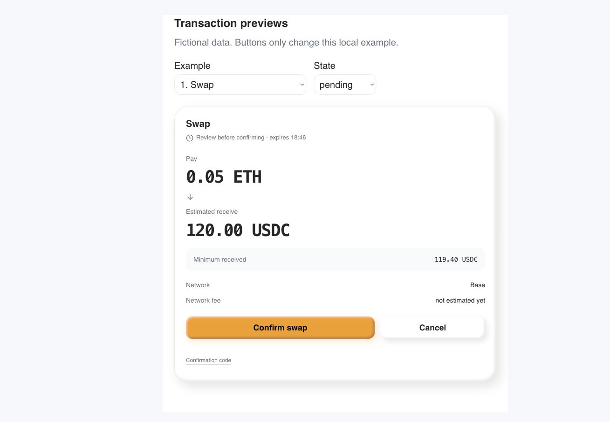
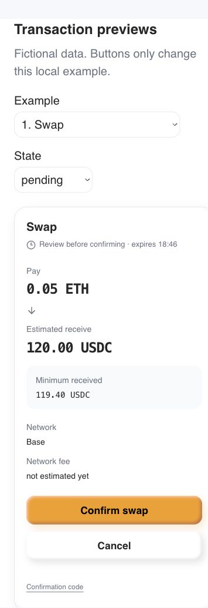
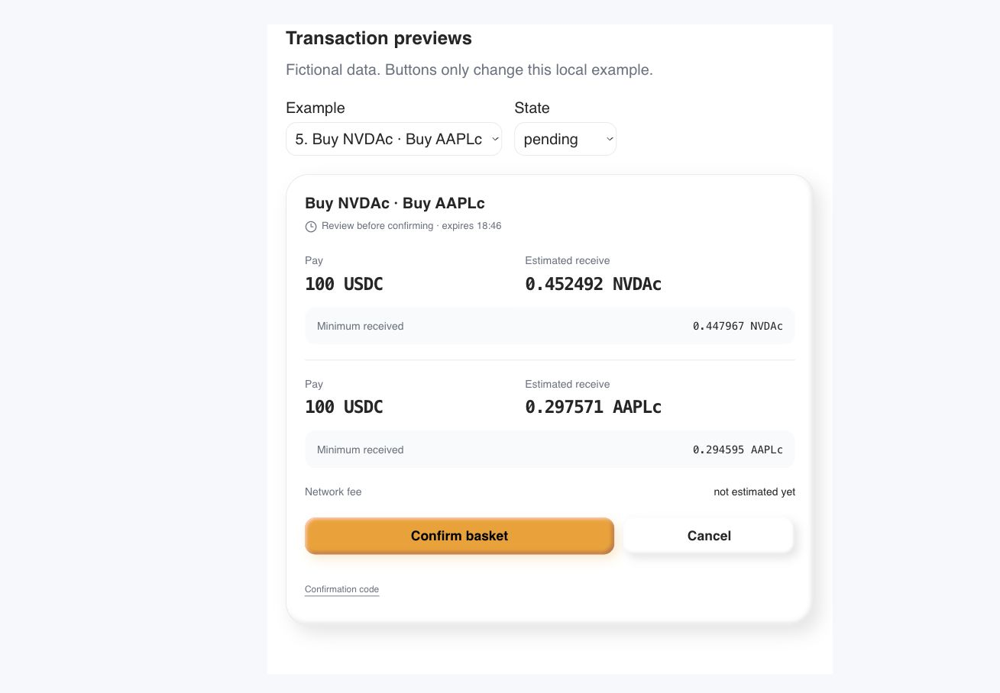
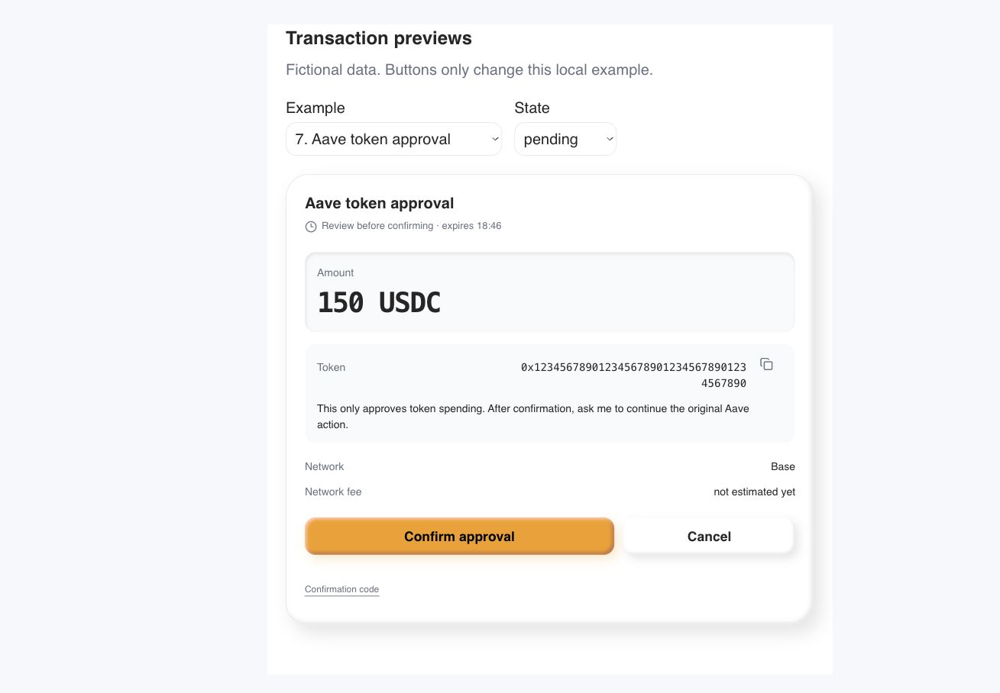
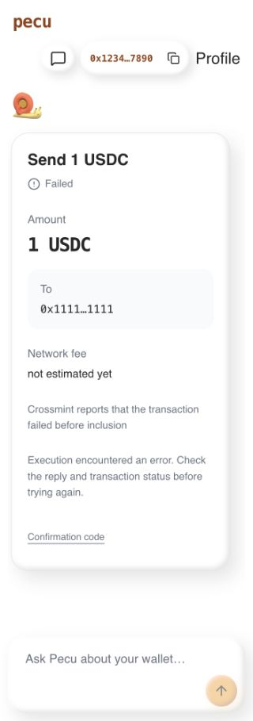

Pecu now uses the selected amount-led clay card, with amber-minimal colors and typography. Baskets keep each trade with its minimum received amount. Approval cards separate the spending permission from the follow-up action.
The preview uses fictional data and the actual React component. Its controls only change local state. No quote was requested, no wallet was connected and no funds moved.
/design now renders the real React component during its build. Its sample controls
remain local. The backend contract, execution and confirmation rules are unchanged.
X chat retains its text presentation. BeeGreat native, CLI and iMessage clients do
not use this Pecu web component. Stocks chat and Pecu Agent share it.
Product deployment remains pending. Changes are uncommitted on main; unrelated analytics work was preserved. This report and interactive fixture are isolated. Existing build warnings concern font import order and bundle size.
Watch browser interaction highlights
The recording contains actual browser frames with idle gaps shortened.




